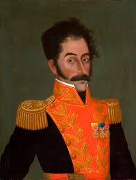
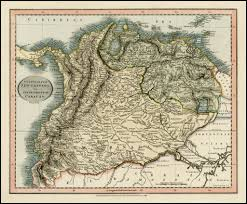
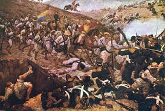
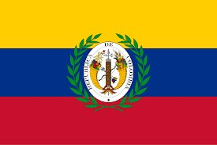
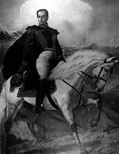
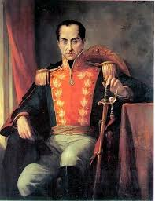
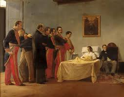

Simón Bolívar's Vision for a United South America —
and the Political Forces That Tore It Apart
Simón José Antonio de la Santísima Trinidad Bolívar y Palacios (1783–1830) was born into the Creole elite of Caracas, Venezuela. Orphaned young, he traveled to Europe where Enlightenment ideas — Rousseau, Voltaire, Montesquieu — ignited his revolutionary vision.
In 1805, standing on Rome's Monte Sacro, Bolívar swore an oath to liberate his homeland from Spanish tyranny. That private vow became the driving force of a military and political career that would reshape an entire continent. By 36, he had won independence for territories that would become five modern nations.
Bolívar was not simply a military genius — he was a political theorist. His Angostura Address of 1819 remains one of the most sophisticated political texts produced in the Americas, grappling with democracy, slavery, and the challenges of Latin American self-governance.
"A people that loves freedom will in the end be free." — Simón Bolívar

Simón Bolívar — El Libertador, liberator of six South American nations

Historical map of New Granada — the colonial territory that became Gran Colombia
For nearly three centuries, northern South America existed under the Viceroyalty of New Granada, established in 1717. This vast unit encompassed present-day Colombia, Venezuela, Ecuador, and Panama — the exact territories Bolívar would later attempt to unify.
Colonial society was rigidly stratified. Peninsulares (Spanish-born) sat at the top; Creoles like Bolívar held wealth and education but were excluded from the highest offices. This contradiction brewed deep resentment that would fuel revolution.
The colonial economy was extractive — designed to funnel wealth back to Spain. Tax burdens fell unevenly, trade was restricted, and local governance was routinely overruled by distant imperial decisions. By 1800, these frustrations had festered for generations.
"We were never viceroys or governors, except by extraordinary means." — Bolívar, Angostura Address
The spark came from Napoleon's 1808 invasion of Spain, which shattered the empire's legitimacy. Local juntas formed across Latin America and independence movements ignited.
Napoleon forces the Spanish king's abdication. Colonial juntas form across Latin America, asserting local authority for the first time in three centuries.
In Bogotá, a staged confrontation triggers a popular uprising. A junta is formed. July 20th is still celebrated as Colombian Independence Day.
Bolívar leads a lightning campaign across Venezuela, recapturing Caracas in 90 days. He is declared "El Libertador" for the first time.
Aided by Haitian President Pétion — whose condition was freeing the enslaved — Bolívar returns stronger, shaping his later abolition decrees.

Battle of Boyacá, August 7, 1819 — the decisive battle of Colombian independence
After a brutal march over the freezing Andes, Bolívar's forces met the Spanish royalist army at the bridge over the Teatinos River and defeated them in under two hours.
The Spanish Viceroy fled Bogotá before Bolívar even arrived. Three days later, Bolívar entered the capital to a hero's welcome. New Granada was free — August 7th is still a national holiday in Colombia today.
This victory gave Bolívar the political opening he needed to pursue his larger dream: a unified republic stretching from the Caribbean to the Pacific.
In February 1819, from the remote Orinoco town of Angostura, Bolívar delivered his political masterwork — arguing Latin America required a stronger executive than the U.S. model, because colonial rule had left populations unprepared for full federal democracy. Congress voted to unite Venezuela and New Granada into a single republic: Gran Colombia.
The flag — yellow, blue, and red — became the ancestor of the modern Colombian, Venezuelan, and Ecuadorian flags. All three nations still carry these colors as a direct inheritance from Bolívar's republic.

The official flag of Gran Colombia — ancestor of the Colombian, Venezuelan, and Ecuadorian flags
Encompassed present-day Colombia, Venezuela, Ecuador, and Panama — roughly 2.5 million km², larger than Western Europe.
Centralized republic with a powerful president, a bicameral Congress, and an independent judiciary. Bolívar became the first president.
Bogotá. Santander served as Vice President running daily affairs while Bolívar continued military campaigns in Peru and Bolivia.
The "free womb" law: children born to enslaved mothers after 1821 would be free at age 18 — a first step toward full abolition.

Bolívar on horseback — a symbol of his relentless military and political campaigns across South America
Bolívar's political philosophy was shaped by a fundamental tension: he believed deeply in liberty and republican government, yet feared that Latin American societies — shaped by colonial despotism — were not yet ready for full democratic self-governance.
He admired the United States but rejected its federal model for Latin America, arguing that a weak central government would lead to fragmentation and caudillo warfare. He proposed a "moral power" — an independent educational institution guiding public virtue — drawn from ancient Rome.
His Bolivian Constitution of 1826 went furthest: proposing a lifetime presidency and appointed senate. Critics saw this as a barely disguised monarchy. Supporters argued it was the only realistic path to stability in volatile postcolonial societies.
"Those who have served the revolution have plowed the sea." — Bolívar
A powerful presidency was essential to prevent the regional fragmentation destroying Gran Colombia from within.
Drawing on Montesquieu and classical Rome, Bolívar balanced democracy with aristocratic stability in his constitutional proposals.
The 1826 Congress of Panama was his attempt at a confederation of all Latin American republics — a vision 130 years ahead of its time.
Influenced by Haiti's example, Bolívar consistently pushed for abolition even when it alienated wealthy Creole elites.
From the moment of its founding, Gran Colombia was under stress. Geographic diversity, regional elites, and competing ambitions created fractures that Bolívar's charisma alone could not seal.

Francisco de Paula Santander — Vice President of Gran Colombia and Bolívar's greatest political rival
The deepest rift was between Gran Colombia's own founders. Santander, the Vice President governing from Bogotá, was a legalist who believed in strict constitutional government. Bolívar demanded executive flexibility and military authority. Their conflict mirrored the liberal-conservative divide that would define Colombian politics for the rest of the 19th century.
Venezuelans resented being governed from Bogotá after supplying the bulk of the liberation army's soldiers. José Antonio Páez, the powerful llanero caudillo, became the focal point of Venezuelan separatism.
Colombian politics divided sharply between centralists (strong national government, supported by the Church) and federalists (regional autonomy, liberal reforms). This ideological war, which would produce nine civil conflicts in Colombia by 1902, first took shape in Gran Colombia's Congress.
Gran Colombia stretched across mountains, jungles, savannas, and coastlines with almost no connecting infrastructure. Travel from Bogotá to Caracas could take weeks. Orders from the capital arrived outdated. The republic was not so much governed as theoretically unified.
Different regions had radically different economies — Venezuelan cattle ranching, New Granadan coffee and gold, Ecuadorian coastal trade. Each region felt its resources were being taxed to support a distant capital that returned little benefit. Economic resentment fed political separatism.
By 1828, Gran Colombia was in full crisis. A constitutional convention in Ocaña deadlocked completely between Bolívar's allies and Santander's liberal faction. Bolívar's supporters walked out, leaving no quorum to act.
On August 27, 1828, Bolívar issued the Decree of Dictatorship, suspending the constitution and ruling by decree. Santander was implicated in a September assassination attempt and sent into exile. Key allies began to turn away.
Bolívar resigned the presidency on April 27, 1830 — aged 47, tubercular, and heartbroken. He died on December 17, 1830 at the hacienda San Pedro Alejandrino near Santa Marta, Colombia, surrounded by a small group of loyal followers. His last words: "José! Let's go! These people don't want us here."
"I have served the revolution twenty years, and from those I have drawn only this certainty: one must work hard, suffer much, and die." — Bolívar, 1830

The death of Simón Bolívar, December 17, 1830 — surrounded by loyal followers at Santa Marta, Colombia
The republic that was born in 1821 died in stages — each secession accelerating the next, like supports giving way in a collapsing building.
Páez convened a congress in Caracas that voted to separate. Bolívar's own birthplace was the first to go. He called it "political suicide" but could not stop it.
Under General Juan José Flores, Ecuador declared independence in May 1830. The most geographically remote part of the republic simply could not be held together.
Bolívar resigned April 27, 1830, aged 47, tubercular and heartbroken. He died December 17, 1830 near Santa Marta. His last words: "José! Let's go! These people don't want us here."
Panama stayed attached to Colombia until 1903, when U.S. canal interests backed a separatist movement — the final act of Gran Colombia's dissolution.
David Bushnell argues Gran Colombia was always an impossible project — too large, too diverse, too poorly connected to be governed from a single capital. Bolívar's personality could not substitute for institutions.
Others emphasize elite interests. Creole landowners had fought for independence to gain local power, not to transfer it to a distant central government. Gran Colombia was dismantled by those who stood to gain most from fragmentation.
Click any event to read its full historical significance.
The republic that replaced Gran Colombia spent the rest of the 19th century fighting the same battles Gran Colombia failed to resolve. Between 1830 and 1902, Colombia experienced nine major civil wars — all fundamentally about federalism vs. centralism.
The culmination was the devastating Thousand Days' War (1899–1902), leaving over 100,000 dead and creating the conditions for Panama's separation in 1903 — the final fracturing of Bolívar's vision.
Hugo Chávez adopted "Bolivarianism" for his Venezuelan revolution, renaming the country the Bolivarian Republic of Venezuela. In Colombia, Bolívar's statue stands in every city plaza and his image appears on currency — but the political struggles he could not solve still echo today.
The flag of Gran Colombia — its yellow, blue, and red colors live on in Colombia, Venezuela, and Ecuador today
"America is ungovernable. Those who serve the revolution plow the sea."— Simón Bolívar, 1830
Retained the core territory. Struggled with civil war through the 19th century. Today still faces inequality and regional tension rooted in post-independence structures.
First to secede in 1829. Built an oil-rich state but one still haunted by caudillismo — the rule of strongmen — exactly what Bolívar had feared.
Most geographically isolated of the successor states. Developed as one of the most conservative republics, with the Church playing a dominant political role.
Remained part of Colombia until 1903, when U.S. canal interests backed separatists — the last act in the long dissolution of the Bolivarian project.
Gran Colombia lasted only a decade, but its failure was not a failure of Bolívar's imagination — it was a collision between a visionary political project and the deeply embedded realities of colonial geography, elite self-interest, and the limits of what any single leader can impose by force of will.
The republic's collapse demonstrates a pattern that would repeat throughout Latin American history: the difficulty of building durable political institutions in societies where independence transferred power from Spanish colonizers to Creole elites, without fundamentally redistributing land, wealth, or political voice to the majority of the population.
The nations that emerged from Gran Colombia's dissolution — Colombia, Venezuela, Ecuador, Panama — are still, in some sense, working through the unresolved questions that brought it down. In that light, Gran Colombia is not merely history. It is context.